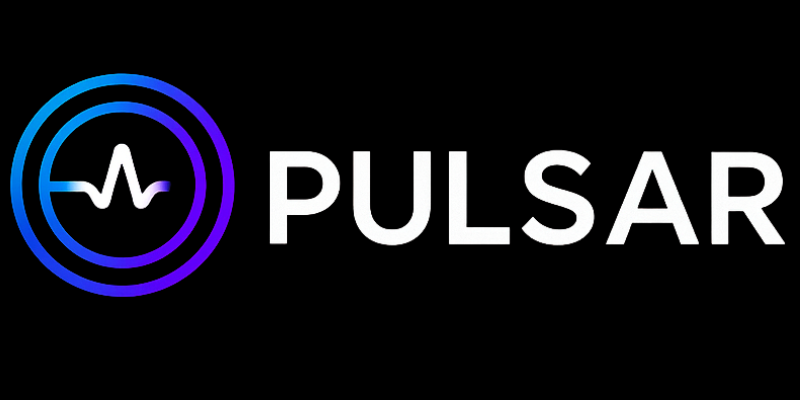

Instituições que já integram a iniciativa Pulsar
Presença institucional em diferentes contextos organizacionais e de impacto social.
Uma iniciativa em construção institucional, com presença em contextos corporativos, sociais e públicos.

Aplicável a escolas particulares
Aplicável a órgãos públicos
Aplicável a empresas
Inteligência comportamental
Indicadores institucionais
Governança preventiva
O Programa Pulsar estrutura inteligência preventiva para escolas, organizações públicas e empresas que desejam antecipar riscos, proteger seu ambiente institucional e tomar decisões com base em evidências.
Como sinais invisíveis se transformam em riscos — e como o Pulsar estrutura a resposta.
O Programa Pulsar é uma infraestrutura estratégica de inteligência institucional
voltada à organização de evidências, leitura preventiva de sinais e estruturação de indicadores
aplicados à governança de instituições.
Mais do que uma solução operacional, o Pulsar foi concebido para apoiar escolas particulares,
órgãos públicos e empresas na construção de um ambiente mais previsível, protegido e sustentável.
Seu diferencial está na capacidade de integrar leitura comportamental, organização institucional,
monitoramento contínuo e geração de relatórios estratégicos, permitindo decisões mais seguras,
fundamentadas e antecipatórias.
Estruturação formal de indicadores institucionais, evidências organizadas e protocolos para antecipação de riscos.
Leitura integrada de sinais humanos e organizacionais, permitindo identificar padrões antes que se tornem crises.
Mais segurança organizacional, proteção reputacional e base estruturada para decisões com maior previsibilidade.
Uma mesma lógica de inteligência preventiva adaptada a diferentes tipos de instituição.
Fortalece o ambiente escolar, apoia a identificação precoce de vulnerabilidades e contribui para retenção e sustentabilidade institucional.
Organiza indicadores institucionais, amplia a capacidade de leitura interna e fortalece a governança de ambientes complexos.
Ajuda a compreender o ambiente organizacional, antecipar desgastes e transformar sinais difusos em inteligência aplicada à gestão.
O Pulsar se adapta à realidade da instituição, respeitando seu contexto, sua estrutura e seus objetivos estratégicos.
Uma jornada estruturada para transformar sinais difusos em inteligência institucional aplicada à tomada de decisão.
Leitura inicial da realidade da instituição, identificação de áreas sensíveis e compreensão do contexto organizacional.
Organização dos primeiros sinais estratégicos, evidências e protocolos preventivos de acompanhamento.
Acompanhamento estruturado dos sinais institucionais, com leitura progressiva da dinâmica interna da organização.
Consolidação das informações e geração de base segura para decisões orientadas por evidências.
O Pulsar transforma percepção em estrutura:
observa → organiza → acompanha → orienta.
Uma nova camada de governança para instituições que desejam antecipar riscos e sustentar decisões com inteligência.
Presença institucional em diferentes contextos organizacionais e de impacto social.
Uma iniciativa em construção institucional, com presença em contextos corporativos, sociais e públicos.
O Programa Pulsar já iniciou sua validação institucional em contextos educacionais e organizacionais.
Estruturação de leitura institucional e organização de indicadores aplicados a contextos educacionais voltados ao desenvolvimento socioemocional e prevenção.
Instituto 61Diagnóstico institucional, identificação de vulnerabilidades invisíveis e base inicial para implantação da inteligência preventiva em ambiente educacional parceiro.
Projeto Educacional ParceiroO Programa Pulsar já iniciou sua validação institucional. As próximas instituições integrarão o ciclo inicial de expansão e consolidação metodológica.
Ciclo Inicial Pulsar 2026Uma instituição que enxerga antes, decide melhor.
Identificação precoce de situações sensíveis, redução de desgastes silenciosos e maior equilíbrio institucional.
Mais clareza sobre a realidade interna da instituição e maior previsibilidade para agir com segurança.
Registros estruturados, fortalecimento da governança e maior proteção reputacional e organizacional.
O Programa Pulsar foi concebido para instituições que desejam sair da reação e entrar em uma nova lógica de leitura institucional, prevenção estruturada e decisão baseada em evidências.
Falar com a equipe do Pulsar